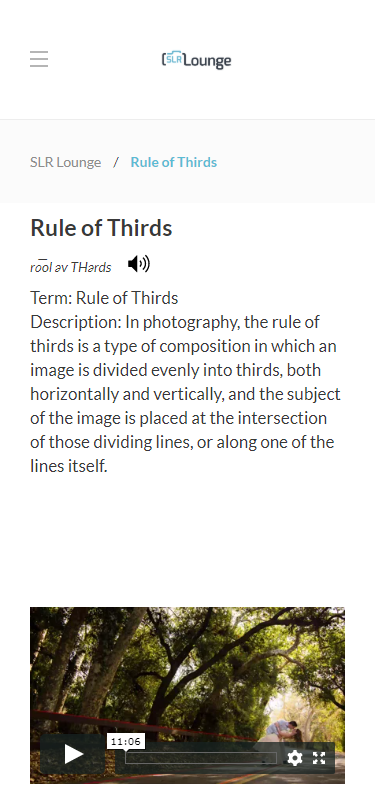
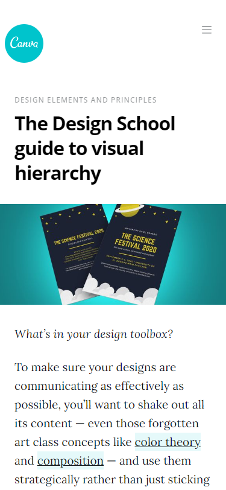

Hick's Law
www.lawsofux.comHick’s Law (or the Hick-Hyman Law) is named after a British and an American psychologist team of William Edmund Hick and Ray Hyman. In 1952, this pair set out to examine the relationship between the number of stimuli present and an individual’s reaction time to any given stimulus.
Rule of Thirds
www.slrlounge.com Term: Rule of Thirds Description: In photography, the rule of thirds is a type of composition in which an image is divided evenly into thirds, both horizontally and vertically, and the subject of the image is placed at the intersection of those dividing lines, or along one of the lines itself.
Visual Hierarchy
www.canva.com To make sure your designs are communicating as effectively as possible, you’ll want to shake out all its content — even those forgotten art class concepts like color theory and composition — and use them strategically rather than just sticking to a few favorite or trendy techniques.